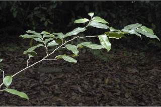
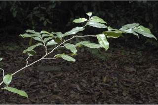

Images :

 



| Habit : | Trees up to 30 m tall. |
| Leaves : | Leaves simple , alternate , distichous ; stipules ovate , caducous ; petiole 0.5-1.3 cm long, canaliculate , glabrous ; lamina 8-13 x 3-6.5 cm, narrow elliptic , apex bluntly acuminate , base acute and slightly asymmetric , margin entire , coriaceous , shining, glabrous ; midrib flat above; secondary_nerves 7-12 pairs; tertiary_nerves reticulo-percurrent . |
| Inflorescence / Flower : | Flowers unisexual , dioecious ; male flowers greenish white in axillary cluster; female flower solitary , long pedicellate . |
| Fruit and Seed : | Drupe , obovoid , to 2.5 cm long; 1-seeded , arillate . |